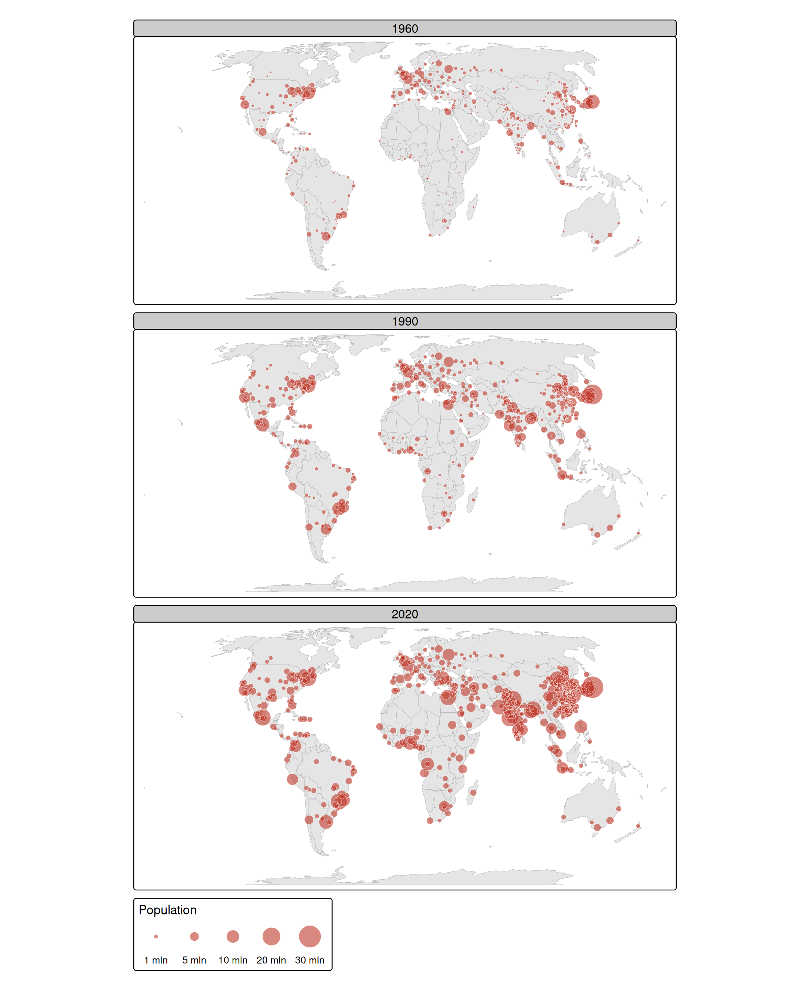
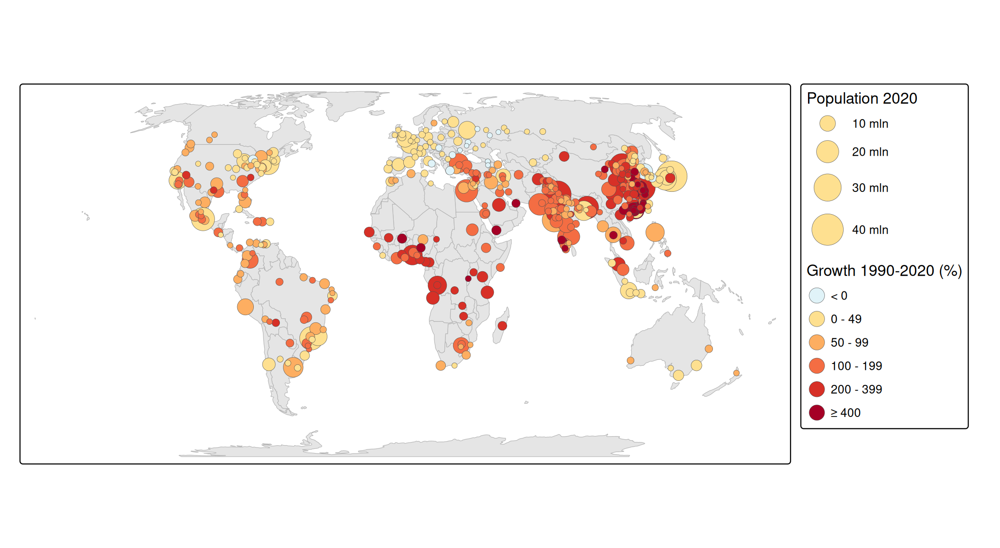

library(tmap)
tmap_options(scale = 0.75)How do we show change on a map? This example shows three ways: small multiples (one map per year), a map of the change itself, and an animation. The data are the populations of the largest metropolitan areas in the world, from 1950 to 2030.
About the data
metro contains 436 metropolitan areas, with one population variable per decade:
names(metro)
#> [1] "name" "name_long" "iso_a3" "pop1950" "pop1960" "pop1970"
#> [7] "pop1980" "pop1990" "pop2000" "pop2010" "pop2020" "pop2030"
#> [13] "geometry"Small multiples
When a map variable gets several data variables, a facet is made for each of them. Here, the bubble sizes of three years are shown below each other with tm_facets_vstack():
tm_shape(World, crs = "+proj=eqearth") +
tm_polygons(fill = "grey90", col = "grey70", lwd = 0.5) +
tm_shape(metro) +
tm_bubbles(
size = c("pop1960", "pop1990", "pop2020"),
size.scale = tm_scale_continuous_area(values.scale = 2, ticks = c(1, 5, 10, 20, 30) * 1e6),
size.free = FALSE,
size.legend = tm_legend("Population", orientation = "landscape",
position = tm_pos_out("center", "bottom")),
fill = "#C0392B", fill_alpha = 0.6, col = "white", lwd = 0.3) +
tm_facets_vstack() +
tm_layout(panel.labels = c("1960", "1990", "2020"))
Two settings are essential to compare the maps:
-
size.free = FALSE: the facets share one size scale (and one legend), so a bubble of 10 million has the same size in each year; -
tm_scale_continuous_area(): the area of a bubble is proportional to the population, which is how we perceive the size of a bubble (see the article on scales).
Mapping the change
Small multiples show the state at each moment, but the change itself has to be read by comparing the maps. When the change is the message, it is better to map it directly. Here, we compute the growth between 1990 and 2020 in percent:
metro$growth = (metro$pop2020 / metro$pop1990 - 1) * 100The growth is mapped to the fill color, with a diverging palette around zero, and the population of 2020 to the size:
tm_shape(World, crs = "+proj=eqearth") +
tm_polygons(fill = "grey90", col = "grey70", lwd = 0.5) +
tm_shape(metro) +
tm_bubbles(
size = "pop2020",
size.scale = tm_scale_continuous_area(values.scale = 2),
size.legend = tm_legend("Population 2020"),
fill = "growth",
fill.scale = tm_scale_intervals(breaks = c(-Inf, 0, 50, 100, 200, 400, Inf),
values = "-brewer.rd_yl_bu", midpoint = 0),
fill.legend = tm_legend("Growth 1990-2020 (%)"),
col = "grey30", lwd = 0.3)
The fastest growing metropolitan areas are in Africa and Asia, while most metropolitan areas in Europe and North America have grown less than 50%.
Animation
An animation shows the change as a movie: one frame per year. Replace the facets by tm_animate(), and use all decades:
tm_shape(World, crs = "+proj=eqearth") +
tm_polygons(fill = "grey90", col = "grey70", lwd = 0.5) +
tm_shape(metro) +
tm_bubbles(
size = paste0("pop", seq(1950, 2030, by = 10)),
size.scale = tm_scale_continuous_area(values.scale = 2),
size.free = FALSE,
fill = "#C0392B", fill_alpha = 0.6, col = "white", lwd = 0.3) +
tm_animate(fps = 2)See the article on animations for the result and for more options, such as smooth transitions between the frames.
Which one to choose? Small multiples are best for printed media and for comparing specific moments, a map of the change is best when the change is the message, and an animation is best for presentations, to show the overall trend.